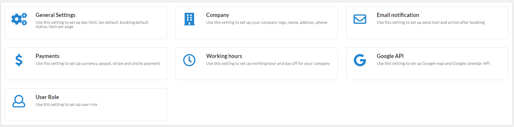
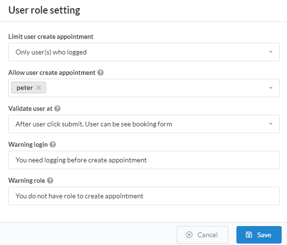

At default, all of client (include login or not login) can be create appointment, but in some cases you want to limit only logged-in users or users on the selected list can create a appointment. This feature for this case. To config, please do follow:


At here you can defined limit or unlimit.
.After user click submit. User can be see booking form: This mean plugin will be display booking form and only check user role when user click submit
.Before display booking form. User only see notice message instead of booking form: This mean plugin will check user role before display form.
This is the message when the user is not logged in
This is the message when the user is not in the list